Криптография для самых маленьких
Что такое криптография
Наука о методах обеспечения конфиденциальности, целостности данных, аутентификации, шифрования.
История
- Моноалфавитные шифры (3 тысячелетия до н.э)
- Полиалфавитные шифры (9 века до 20 век н.э)
- Внедрение электромеханических устройств (с начала до середины 20 века)
- Математическая криптография (с середины 20 века)
Энигма
 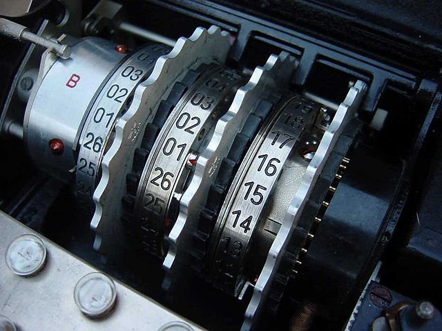
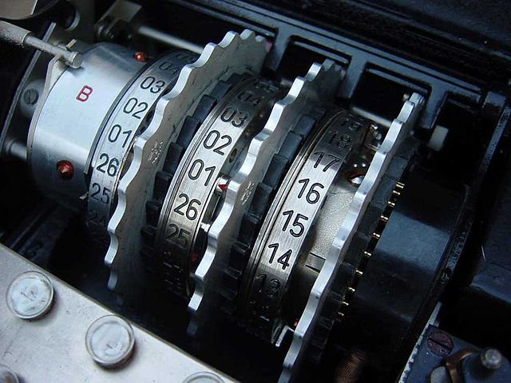
Генераторы случайных чисел
- Энтропия
- Программные (псевдослучайные) и аппаратные
- Обычные и криптостойкие
Алгоритмы генераторов случайных чисел

Криптостойкие алгоритмы генераторов случайных чисел
- Алгоритм Блюма — Блюма — Шуба
- Алгоритм Блюма — Микали
- Алгоритм Ярроу
- Алгоритм Fortuna
- /dev/random, /dev/urandom
- CryptGenRandom MS/API
- CPRandom в КриптоПРО
Хэширование
Хеш-функция, или функция свёртки — преобразование массива данных произвольного размера в выходную битовую строку определённого размера
Первое хэширование
Свойства хэш-функций
- разрядность
- вычислительная сложность
- криптостойкость
- вероятность возникновения коллизий
Популярные алгоритмы
- CRC 8,16,32..
Популярные алгоритмы
- CRC 8,16,32..
- MD4, MD5
Популярные алгоритмы
- CRC 8,16,32..
- MD4, MD5
- SHA1, SHA-2, SHA-3
Популярные алгоритмы
- CRC 8,16,32..
- MD4, MD5
- SHA1, SHA-2, SHA-3
- BCrypt
Популярные алгоритмы
- CRC 8,16,32..
- MD4, MD5
- SHA1, SHA-2, SHA-3
- BCrypt
- Stribog (ГОСТ 34.11-2012)
Соль и перец
- Статическая
- Динамическая
- Перец 🌶️
salt = "abc"
passwordHash = md5(salt + password)
HMAC
Аналог цифровой подписи данных с использование ХЭШ функции.
HMAC-MD5, HMAC-SHA1, HMAC-RIPEMD128, HMAC-RIPEMD160 и т. п.
Примитивная реализация:
secretKey = "secret"
hmac = md5(secretKey + data)
Атаки
- Полный перебор
- Перебор по словарю
- Радужные таблицы
- Атака «дней рождения»
Шифрование
- Симметричное
- Ассиметричное
- Блочные шифры
- Потоковые шифры
Простейший пример симметричного шифрования
srand(100);
for (int i = 0; i < data.size(); ++i) {
data[i] = data[i] ^ (rand() % 256);
}
Симметричные блочные шифры
- DES
- AES
- 3DES
- RC2,RC5
- Blowfish
- Twofish
- Kuznechik (ГОСТ Р 34.12-2015)
Симметричные потоковые шифры
- RC4
- Salsa20 (ChaCha20)
- Rabbit
Ассиметричные шифры
- RSA
- ElGamal
- ECC (elliptic-curve Cryptography)
- Гибридное шифрование
Elliptic Curve
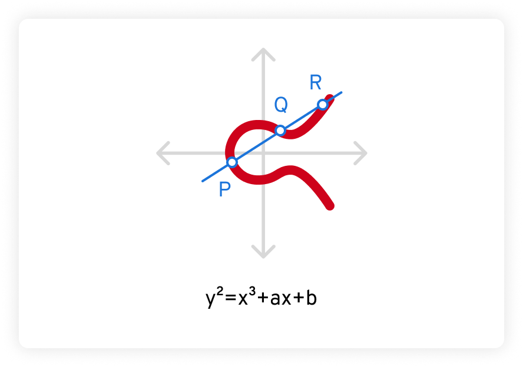Elliptic Curve
Цифровая подпись (ЭЦП)
- Проверка подлинности подписанного документа
- Ассиметричные крипто-алгоритмы
- Открытый и закрытый ключ
- Подписывается не сам документ а его ХЭШ
- Симметричная схема и ассиметричная
Алгоритмы ЭЦП
- DSA
- ECDSA
- ГОСТ 34.10-94
- ГОСТ 34.10-2012
Виды ЭЦП
- Сырая подпись
- ASN.1 (Abstract Syntax Notation)
- PKCS (Public Key Cryptography Standards)
- CMS (Cryptographic Message Syntax, PKCS#7)
- SMIME (Secure / Multipurpose Internet Mail Extensions)
- CADES (CMS Advanced Electronic Signature)
- XMLDSig
Пример CMS
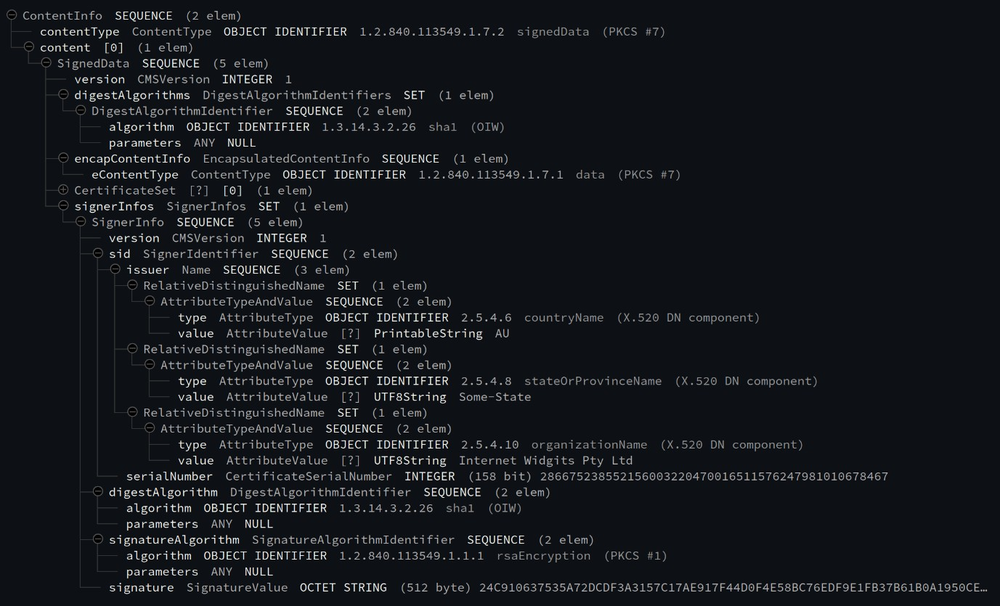Пример XMLDsig
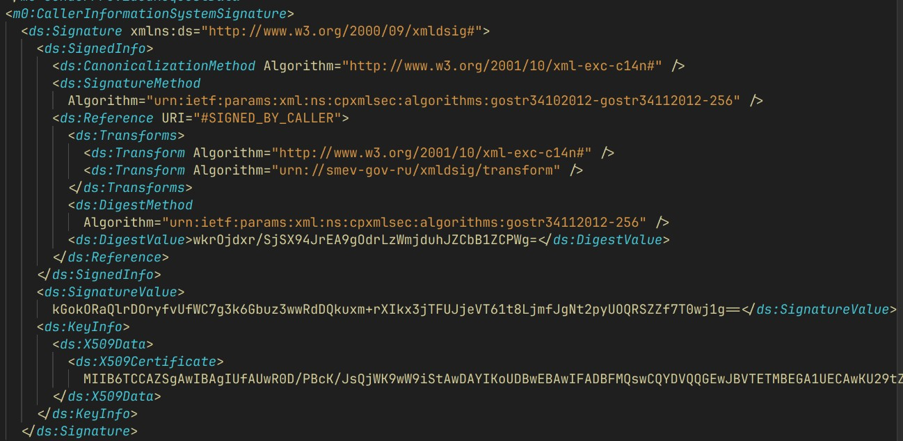Каноникализация в XML
До:
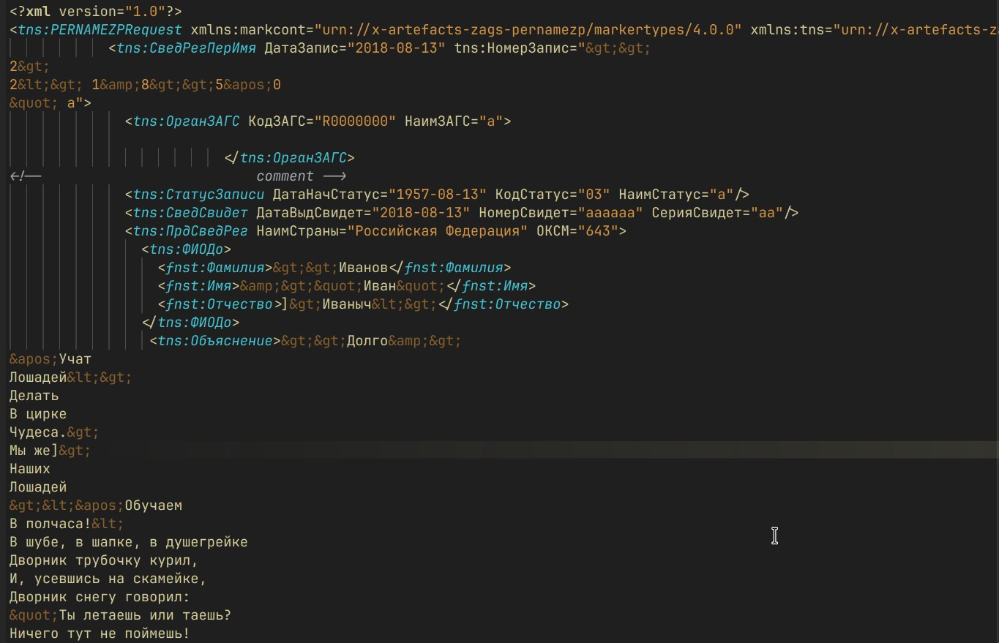Каноникализация в XML
После:
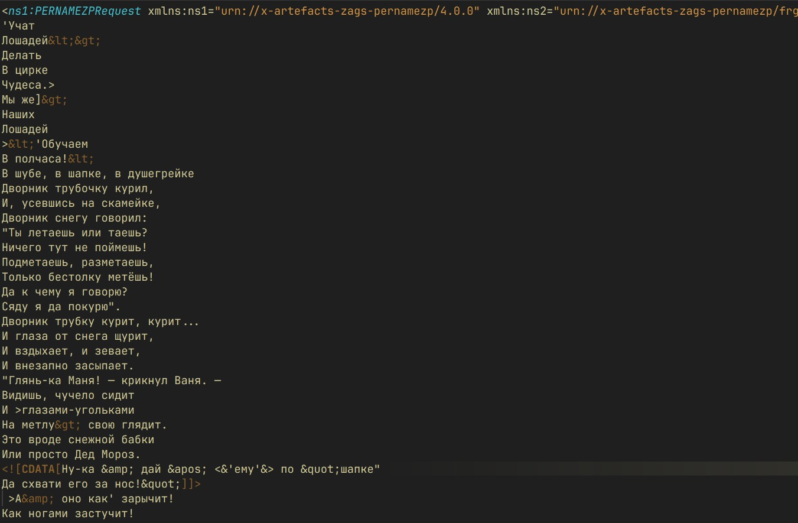Цифровые сертификаты
Выпущенный удостоверяющим центром электронный или печатный документ, подтверждающий принадлежность владельцу открытого ключа или каких-либо атрибутов.
Подробно про сертификат
- X.509
- ASN.1
- PEM и DER
Структура сертификата X.509
- Версия
- Серийный номер
- Идентификатор алгоритма подписи
- Имя издателя
- Период действия:
- Не ранее
- Не позднее
- Имя субъекта
- Информация об открытом ключе субъекта:
- Алгоритм открытого ключа
- Открытый ключ субъекта
- Уникальный идентификатор издателя (обязательно только для v2 и v3)
- Уникальный идентификатор субъекта (обязательно только для v2 и v3)
- Дополнения (для v2 и v3)
- Возможные дополнительные детали
- Алгоритм подписи сертификата (обязательно только для v3)
- Подпись сертификата (обязательно для всех версий)
Пример сертификата
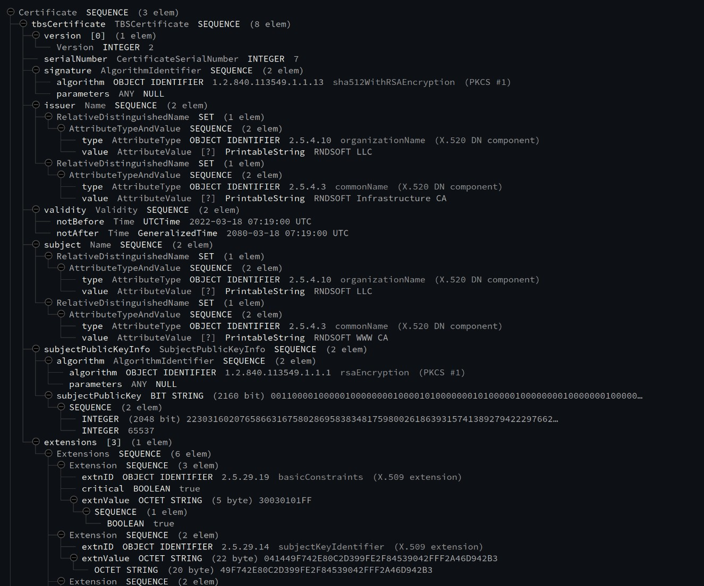Пример сертификата в PEM
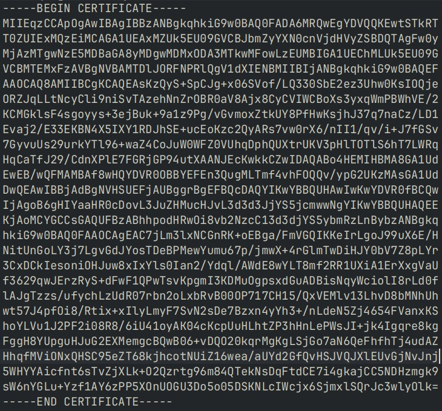Цепочка доверия сертификатов
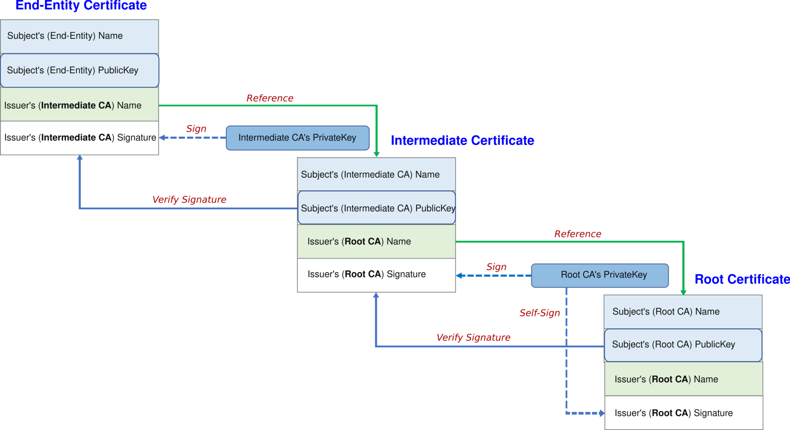TLS
Transport Layer Security — протокол защиты транспортного уровня
Версии TLS
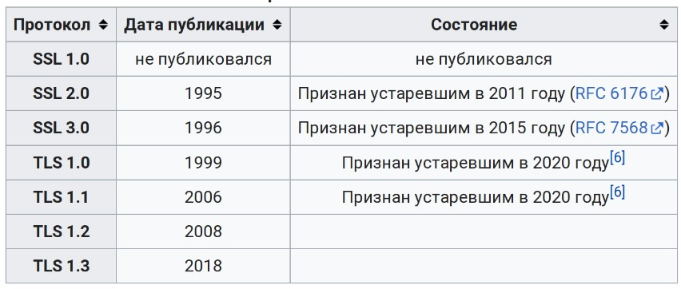Процесс создания соединения

Обмен сессионными ключами методом Diffie-Hellman
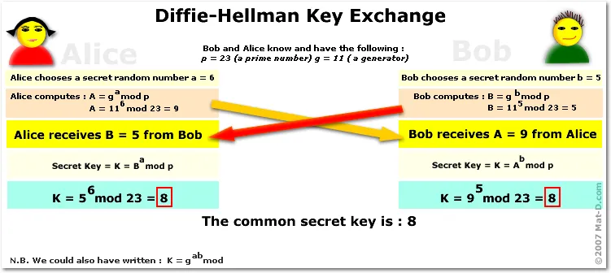TLS сертификаты
- Используются обычные X.509
- Subject: CN=rnds.pro
- Используется проверка цепочки доверия
Российская криптография
Стандарты:- ГОСТ 34.11-94,2012,2015,2018 - вычисление ХЭШ
- ГОСТ 34.10-94,2012,2015,2018 - цифровая подпись
- ГОСТ 34.10-2015,2018 - симметричное шифрование Кузнечик, Магма
Российская криптография
Библиотеки, поддерживающие алгоритмы ГОСТ:- КриптоПРО CSP 4,5
- OpenSSL 3 с плагином ГОСТ
- BouncyCastle (Java, C#)
Ключник и Сайнер
- Используются обычные X.509
- Subject: CN=rnds.pro
- Используется проверка цепочки доверия